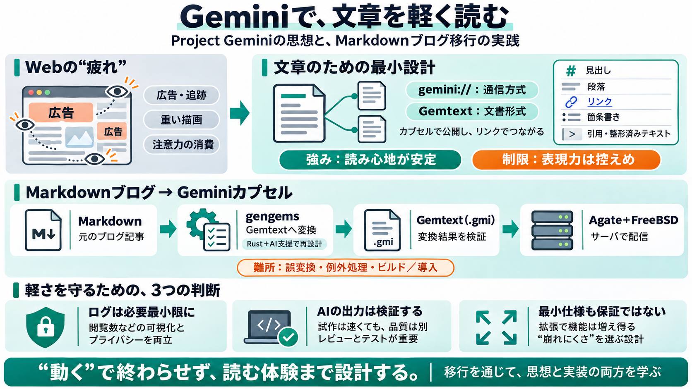

https://jonathanmh.com/p/getting-started-with-gemini/
ls content for document in content/.mdx; do echo processing $document md2gemtext $document content/$(basename $documen…

Geminiで“軽く読む”
Project Gemini（ジェミニ）を理解し、MarkdownブログをGeminiのカプセル（capsule）へ移すまでの試行錯誤を、思想と実装の両面から整理します。
Webの“疲れ”
Webがアプリ化し、広告・トラッキング・注意力の消費が増えることで、読み手はプライバシーや集中を失いがちです。
読む前に仕組みが増える
ads / scripts /追跡
帯域・計算が増える
重い描画/自動処理
読むための最小箱
Geminiはプロトコル（通信方式）としての gemini:// と、最小仕様の文書形式Gemtextで、“文章が文章である”空間を作ろうとします。
gemini://（HTTPの別系統）
capsule（カプセル）で接続
Gemtext（.gmi / text/gemini）
Gemtextは“最小限”
Gemtextは見出し・段落・リンク・引用・箇条書き・整形済みテキストなどに絞り、クライアント差による表示揺れを抑えます。
リンク
文書同士はリンクで接続
見出し
構造が読みやすくなる
箇条書き
一覧は“規則的”に
引用/整形
テキストの意味を崩しにくい
読みやすさ vs 表現力
Gemtextの極小仕様は表示の一貫性を強みにする一方、Markdown的な表現の拡張やセマンティクスの本流には入りにくい、というトレードオフがあります。
体験の再現性
誰が見ても読み心地
表現の上限
拡張は設計次第
移行は“道具”が支配
移行の成否は思想だけでなく、変換ツールの品質（誤変換・例外・テスト）に大きく左右されます。
Pythonで試す→不十分
ロジック/堅牢性の課題
Rust + AI支援で再設計
gengems（変換ツール）
配信はAgateで
Gemtextとして整形した後、GeminiサーバとしてAgate（Rust製）を導入し、FreeBSD向けのビルド/導入設計が難所になります。
gengemsで整形
Agate（Rust）
FreeBSDでの導入
プライバシーとログ
Geminiは追跡しにくい文脈で語られますが、著者はサーバログは自然に発生し得るため、必要最小の可視化なら両立できる姿勢を示します。
analyticsは思想と衝突
“どこまで集めるか”が鍵
閲覧数・国推定など
古典的カウンタの延長
“膨張しにくい”は保証じゃない
Geminiが膨張しにくいという主張は、クライアントが機能拡張できる以上、普及すれば崩れ得ると認識されています。
設計意図
最小仕様で注意を守る
現実
要求されれば機能が増える
例
画像の自動読み込み（クライアント側）
結論
崩れない“保証”ではなく“崩れにくさ”
AI開発の“現場”
AI支援で速度は得られる一方、安いモデルではコード品質やテスト不足が問題になり得る点が、移行の現実として語られています。
試作の加速
出力が早い
検証の不足
堅牢性・再現性が欠ける
読者への勧め
著者は、サーバ移行を通じてGeminiの思想と実装の緊張を体験できるとして、読者にも試すことを勧めます。
文章中心の設計
変換・配信の現場
ログ/品質/拡張の見極め
参考（本文由来の要点）
この要約は、提示された文章中の内容（Geminiの前提、Gemtextの最小仕様、gengems/Agate/FreeBSD、analytics論点、膨張リスク）を整理したものです。
もし一次情報へ当たるなら、次を探すと効率的です：
Getting started with Gemini（Geminiの導入・HTTPとの違い）／Gemtext仕様（Gemtextの最小要素）／Agate（Geminiサーバ実装）／FreeBSDでの導入・ビルド例／Geminiのanalytics/プライバシー議論。
ls content for document in content/.mdx; do echo processing $document md2gemtext $document content/$(basename $documen…
In addition, the impoverished Gemtext document format hasn’t changed. It still provides no means to emphasize text, or t…
Privacy Gemini’s design inherently discourages tracking mechanisms. There are no cookies, no third-party resources, no …
Privacy Gemini’s design inherently discourages tracking mechanisms. There are no cookies, no third-party resources, no …
- gemtext2md (Rust) - tool for converting Gemtext to Markdown - gemtexter (Bash) - Site generator and blog engine for Ge…